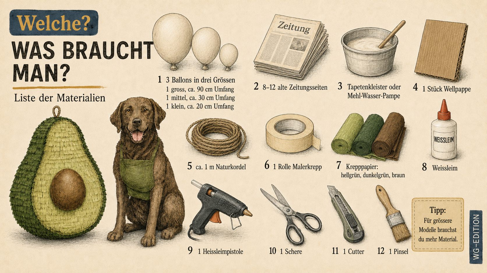

Was du brauchst

Tipp von DudeWithDog
Im Fachhandel gibt es alles. Wer grösser bauen will, braucht entsprechend mehr Material. Birnenballons gibts auch in grösseren Versionen.
Tag eins — Rohbau
1Kleister anrühren
Mehl und Wasser im Verhältnis eins zu eins verrühren, bis eine glatte Pampe entsteht. Oder Tapetenkleister nach Packungsanleitung ansetzen. Beides funktioniert.
2Ballons vorbereiten
- Grossen und mittleren Ballon aufblasen
- Mit Malerkrepp an den Knoten zusammenkleben, grosser Ballon unten, mittlerer oben
- So entsteht die typische Avocado-Birnenform mit Spitze
- An einer Schnur aufhängen
3Erste Lage Zeitung
- Zeitung in Streifen reissen (ca. 3 bis 5 cm breit, 10 bis 15 cm lang)
- Streifen in Kleister tunken, überschüssigen Kleister abstreifen
- Auf die Rückseite der Ballons kleben, nur die obere Hälfte
- Übergang zwischen den zwei Ballons besonders sorgfältig: Streifen quer drüberlegen
- Vollständig trocknen lassen, ca. 4 bis 6 Stunden
4Kern vorbereiten
- Kleinen Ballon aufblasen, an Schnur aufhängen
- Eine Hälfte mit Zeitungsstreifen und Kleister überziehen
- Wichtig: Die Streifen sollen etwa 2 bis 3 cm über den Äquator des Ballons hinausreichen. Dieser Überstand wird später zur Klebelasche
- Trocknen lassen
Tag zwei — Aufbau
5Zweite und dritte Lage
- Auf den Avocado-Rücken nochmal Zeitungsstreifen kleben, diesmal in andere Richtung als beim ersten Mal
- Trocknen lassen, 4 bis 6 Stunden
- Dritte Lage drauf, nochmal trocknen lassen
Hier entscheidet sich, wie schnell Ava reisst:
| Lagen | Wann gibt Ava nach? |
|---|
| 2 Lagen | Früh, schon bei wenig Belastung oder Luftfeuchtigkeit |
| 3 Lagen | Mittel, bewährter Standard |
| 4 Lagen | Spät, nur bei gezielter Belastung |
| 5+ Lagen | Sehr spät, fast unzerstörbar |
6Kern fertigstellen
- Kleinen Ballon mit zweiter Lage überziehen, auch hier den Überstand mitführen
- Trocknen lassen
Tipp von DudeWithDog
Zwei Lagen reichen beim Kern. Er muss nicht reissen, sondern nur halten.
Tag drei — Zusammenbau
7Ballons entfernen
- Ballons in den Pappmaché-Schalen platzen lassen, mit einer Nadel
- Reste rausziehen
- Du hast jetzt: eine grosse gewölbte Avocado-Halbschale (Rücken) und eine kleinere Halbkugel (Kern)
8Vorderseite zuschneiden
- Halbschale flach auf den Karton legen, Umriss mit Bleistift nachzeichnen
- Karton in Avocado-Form ausschneiden, etwa 5 mm grösser als die Halbschale, damit ein kleiner Rand übersteht zum Ankleben
9Schlitz schneiden
- Oben in den Karton einen schmalen Schlitz schneiden, ca. 4 cm lang, 1 cm breit
- Hier kommt später das Sparen rein
Tipp von DudeWithDog
Kein Deckel, keine Klappe. Das würde die Konstruktion schwächen.
10Schnur für die Aufhängung
- Zwei kleine Löcher links und rechts oben in den Karton stechen
- Auf der Rückseite ein kleines Reststück Wellkarton als Konterstück über die beiden Löcher legen
- Schnur von vorne durch beide Löcher und durch das Konterstück ziehen
- Auf dem Konterstück fest verknoten, das verteilt den Zug auf eine grössere Fläche und verhindert, dass die Schnur ausreisst
11Kern aufkleben
- Den Kern (Halbkugel mit überstehendem Rand) mittig auf den Karton legen
- Den überstehenden Rand flach auf den Karton drücken, das ist die Klebefläche
- Mit Heissleim rundum am Karton fixieren
Tipp von DudeWithDog
So sitzt der Kern stabil und plastisch auf der Vorderseite.
12Vorderseite und Rücken zusammenfügen
- Den überstehenden Kartonrand mit Heissleim am Rand der Pappmaché-Schale befestigen
- Rundum verbinden, sodass ein geschlossener Hohlkörper entsteht
- Schlitz oben bleibt offen, das ist die einzige Öffnung
Die Avocado-Haut
13Fransen schneiden
- Alle drei Farben (hellgrün, dunkelgrün, braun) in breite Streifen schneiden, ca. 8 bis 10 cm breit
- Eine Seite der Streifen tief einfransen, kleine Schnitte alle 5 mm, ca. 4 cm tief. Die Fransen sollen mindestens zur Hälfte der Streifenbreite reichen
Tipp von DudeWithDog
Mehrere Bögen übereinander legen und auf einmal schneiden. Das spart Zeit.
14Dunkelgrüner Rand
- Unten am Rand der Vorderseite anfangen
- Waagrechte Bahnen dunkelgrüner Fransen aufkleben (Weissleim), Fransen zeigen nach unten
- Den ganzen äusseren Rand der Vorderseite (ca. 3 bis 4 cm breit) komplett mit Dunkelgrün füllen
15Hellgrünes Fruchtfleisch
- Im inneren Bereich der Vorderseite weitermachen, Bahn für Bahn waagrecht nach oben
- Bis kurz vor den Kern in der Mitte
- Den Kern selbst freilassen
16Brauner Kern
- Den Kern mit braunen Fransen verkleiden
- Hier ruhig dichter und kürzer fransen, damit die rundliche Form schön sichtbar bleibt
17Rückseite
- Avocado wenden
- Den ganzen Rücken mit dunkelgrünen Fransen verkleiden, Bahn für Bahn waagrecht von unten nach oben
Tipp von DudeWithDog
Hier nicht sparen mit den Fransen. Das gibt das satte Avocado-Aussehen.
18Aufhängen und warten
- An einem gut sichtbaren Ort aufhängen, die Küche ist Tradition
- Den Schlitz nutzen, wofür du willst
- Warten, was die Zeit und die Luftfeuchtigkeit mit Ava machen
Wenn etwas nicht klappt
- Die Pampe ist zu flüssig
- Mehr Mehl rein, kurz aufkochen, abkühlen lassen.
- Das Pappmaché klebt nicht an der Vorderseite
- Heissleim verwenden. Weissleim braucht zu lange.
- Die Form ist schief
- Beim Aufhängen einen zweiten Punkt zum Stabilisieren nehmen, z.B. an der Spitze festbinden.
- Die Fransen lösen sich
- Weissleim mit etwas Wasser verdünnen, gleichmässig auftragen. Mehr Druck beim Andrücken.
- Ava ist zu schwer geworden
- Beim nächsten Mal weniger Lagen. Diese hier hängt jetzt extra stabil.
- Der Kern fällt ab
- Überstand prüfen. Wenn die Klebelasche zu kurz war, neuen Heissleim grossflächig auftragen.